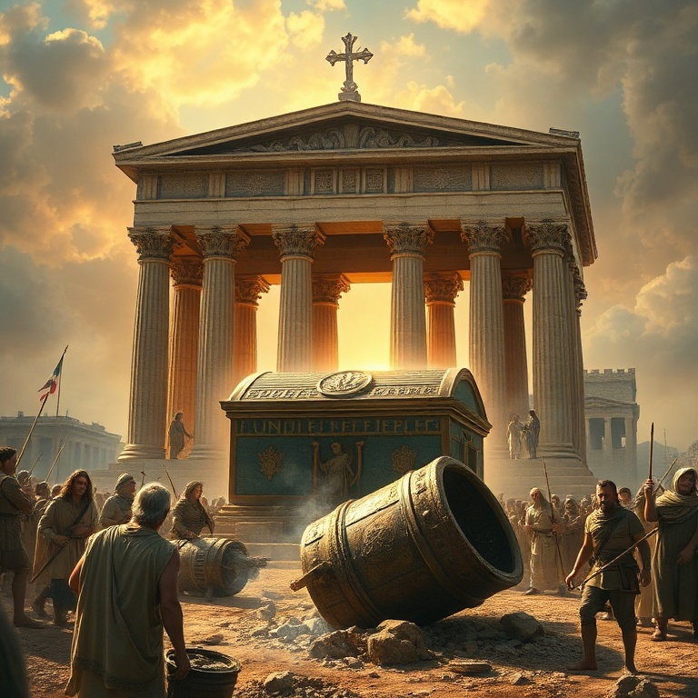

Introdução
1 Samuel marca a transição de Israel de uma teocracia para uma monarquia. O livro cobre a vida de Samuel, o último juiz, a ascensão e queda de Saul, e a unção de Davi como futuro rei. É um livro de contrastes entre a obediência e a rebelião, entre a aparência exterior e o coração que Deus vê. Samuel foi o homem que Deus usou para guiar Israel nessa transição difícil. Profeta, sacerdote e juiz, ele serviu como ponte entre o período dos juízes e o início da monarquia. Sua vida foi marcada pela fidelidade em meio a um povo infiel. Samuel ensinou Israel que a obediência é melhor que o sacrifício. O tema central de 1 Samuel é que Deus vê o coração. Saul foi escolhido por sua aparência, mas Davi foi escolhido por seu coração. Deus não se impressiona com altura ou beleza; ele busca pessoas segundo o seu coração. O livro nos desafia a examinar nosso próprio coração diante de Deus.
1) Samuel e a Vocação
1) Samuel e a Vocação
Ana, mulher estéril de Elcana, orou amargamente ao Senhor no tabernáculo. Ela fez um voto: se Deus lhe desse um filho, ela o dedicaria ao Senhor todos os dias de sua vida. Eli, o sacerdote, a viu orar em silêncio e a abençoou. Deus se lembrou de Ana, e ela concebeu Samuel. Ana cumpriu seu voto. Após desmamar Samuel, ela o levou ao tabernáculo em Siló e o entregou a Eli. Seu cântico de louvor é um dos grandes hinos do Antigo Testamento, celebrando o poder de Deus que exalta os humildes e abate os soberbos. O cântico de Ana influenciou o Magnificat de Maria. Samuel cresceu na presença do Senhor. Quando menino, Deus o chamou três vezes durante a noite. Samuel pensou que era Eli, mas o sacerdote o instruiu a responder: "Fala, Senhor, que teu servo ouve". Samuel tornou-se profeta reconhecido em todo Israel, e o Senhor era com ele. A vocação de Samuel nos ensina sobre a importância de ouvir a voz de Deus. Deus chama pessoas de todas as idades, e a resposta adequada é a disponibilidade. Samuel aprendeu a discernir a voz de Deus e a transmitir fielmente sua palavra, mesmo quando era difícil.
2) A Arca e a Glória de Deus

2) A Arca e a Glória de Deus
Os filhos de Eli, Hofni e Fineias, eram sacerdotes corruptos. Desrespeitavam os sacrifícios, dormiam com as mulheres que serviam à porta do tabernáculo e tratavam a obra de Deus com desprezo. Eli os repreendeu superficialmente, mas não os removeu do sacerdócio. O juízo de Deus estava próximo. Israel foi à batalha contra os filisteus e foi derrotado. Os anciãos decidiram trazer a arca da aliança para o acampamento, pensando que a presença simbólica de Deus garantiria a vitória. Mas a arca não era um talismã. Israel foi novamente derrotado, a arca foi capturada, e Hofni e Fineias morreram. Quando a notícia chegou a Siló, Eli caiu da cadeira para trás, quebrou o pescoço e morreu. A nora de Eli, grávida, entrou em trabalho de parto ao saber da captura da arca. Antes de morrer, ela disse: "A glória se foi de Israel, porque foi tomada a arca de Deus". A glória de Deus havia se afastado. A arca ficou sete meses na terra dos filisteus. Deus julgou os filisteus, enviando pragas e destruindo seu deus Dagom. Os filisteus devolveram a arca em um carro novo puxado por vacas que nunca haviam puxado jugo. Deus mostrou que sua glória não depende de objetos, e que ele pode proteger sua honra sozinho.
3) Israel Pede um Rei
3) Israel Pede um Rei
Samuel, já idoso, nomeou seus filhos como juízes, mas eles não andaram em seus caminhos. Aceitavam suborno e pervertiam a justiça. Os anciãos de Israel se reuniram e pediram a Samuel: "Constitui-nos um rei para nos julgar, como todas as nações". O pedido desagradou a Samuel e ao Senhor. Deus disse a Samuel: "Não te rejeitaram a ti, mas a mim, para que eu não reine sobre eles". Israel queria ser como as outras nações, rejeitando o governo direto de Deus. Samuel advertiu o povo sobre como um rei os oprimiria, mas eles insistiram. Deus permitiu que tivessem o que pediam. Saul era alto, bonito e impressionante. Foi escolhido por Deus e ungido por Samuel como o primeiro rei de Israel. O Espírito do Senhor veio sobre Saul, e ele profetizou. Israel se alegrou com seu novo rei. Saul iniciou bem, liderando vitórias militares contra os amonitas e filisteus. O pedido de Israel por um rei revela a tendência humana de confiar no que vê em vez de confiar em Deus. A história de Saul mostra que a aparência exterior não garante um coração fiel. Israel queria um rei como as outras nações, mas Deus queria um rei segundo o seu coração.
4) Saul e suas Quedas
4) Saul e suas Quedas
Saul cometeu seu primeiro erro grave ao oferecer holocausto sem esperar Samuel. Quando Samuel chegou, Saul deu desculpas. Samuel disse: "Procedeste loucamente; não guardaste o mandamento que o Senhor teu Deus te ordenou". O reino de Saul não seria estabelecido para sempre. Deus já buscava outro homem. O segundo erro foi ainda mais grave. Deus ordenou que Saul destruísse completamente os amalequitas, mas ele poupou o rei Agague e o melhor dos animais. Quando confrontado, Saul novamente justificou seu pecado. Samuel declarou: "Obedecer é melhor que sacrificar". Por rejeitar a palavra de Deus, Saul foi rejeitado como rei. O Espírito do Senhor se retirou de Saul, e um espírito maligno o atormentava. Saul foi dominado por ciúmes, medo e paranoia. Quando Davi começou a ser exaltado, Saul tentou matá-lo várias vezes. Ele consultou uma médium em Endor, desobedecendo a Deus mais uma vez. Saul terminou seus dias em desespero. A vida de Saul é uma tragédia de desobediência e autojustificação. Ele começou com potencial, mas terminou em ruínas. Saul nos ensina que a obediência parcial é desobediência total, e que Deus valoriza um coração submisso mais do que rituais religiosos. A queda de Saul é um alerta para todos nós.
5) Davi, o Ungido
5) Davi, o Ungido
Deus enviou Samuel a Belém para ungir um novo rei entre os filhos de Jessé. Quando Samuel viu Eliabe, pensou que era o escolhido, mas Deus disse: "Não atentes para a sua aparência, nem para a sua altura, porque o rejeitei. O Senhor não vê como o homem vê: o homem olha para o exterior, mas o Senhor olha para o coração". Davi, o caçula, estava pastoreando as ovelhas. Quando Samuel o viu, o Senhor disse: "Levanta-te e unge-o, porque é este". Davi foi ungido, e o Espírito do Senhor se apossou dele. Davi voltou ao campo, mas agora carregava uma unção que mudaria a história de Israel para sempre. Davi enfrentou Golias quando ninguém mais ousava. Sem armadura, apenas com uma funda e cinco pedras, Davi declarou: "A batalha é do Senhor". Ele derrotou o gigante filisteu e se tornou herói em Israel. Davi tocou harpa para acalmar Saul, serviu em sua corte e fez amizade com Jônatas. O coração de Davi era diferente. Ele confiava em Deus, buscava sua presença e se arrependia quando pecava. Davi não era perfeito, mas era um homem segundo o coração de Deus. Sua unção aponta para Cristo, o grande Filho de Davi, que veio para reinar para sempre com justiça e paz.
Conclusão
1 Samuel termina com a morte de Saul e a transição para Davi. O livro mostra o contraste entre dois reis: Saul, que confiou em si mesmo, e Davi, que confiou em Deus. A mensagem central é clara: Deus vê o coração e busca pessoas fiéis. O livro nos desafia a examinar nosso próprio coração. Estamos confiando em nossa aparência, habilidades ou recursos? Ou estamos buscando um coração segundo o de Deus? Davi aponta para Jesus, o Rei perfeito que veio para nos dar um novo coração e nos capacitar a viver para a glória de Deus.